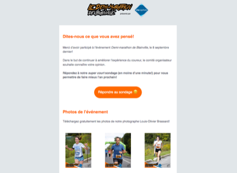
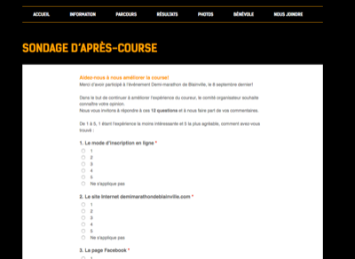

Préambule
Les participants ont reçu un courriel de sondage le jeudi 12 septembre 2019, soit 4 jours après l’événement.


Résultats du sondage
Les résultats des 12 questions son présentés dans des graphiques gradés de couleur.
- Il y a eu 135 répondants.
- Échelle utilisée : 1 (peu apprécié) à 5 (beaucoup apprécié)
Télécharger les données brutes (CSV)
Question 1 : Le mode d’inscription en ligne
Question 2 : Le site Internet demimarathondeblainville.com
Question 3 : La page Facebook
Question 4 : L’accueil sur le site
Question 5 : Les installations
Question 6 : Les parcours
Question 7 : Les bénévoles
Question 8 : L’animation
Question 9 : La médaille
Question 10 : Le goûter du coureur
Question 11 : L'hommage aux coureurs
Question 12 : Appréciation globale
Course des répondants
Commentaires
Les répondants pouvaient laisser des commentaires (facultatifs).
J’ai retenu une sélection de commentaires représentatifs des améliorations à apporter.
(Il y avait beaucoup de commentaires positifs!)
Quelques thèmes récurrents ont été sélectionnés :
- Parcours
- Médaille
- Goûter du coureur
- Animation
- 1 km
- Photos
Parcours
Peut-être un peu moins de quartier industriel pour le parcours du 21k mais sinon dans l'ensemble une course très bien!! Bravo.
Installations=toilettes sur le parcours , très peu , mais pour le reste vraiment très bien ! Assurément à l’an prochain ????????
La ligne (cachée) était un peu décourageante/frustrante pour le 21 km! Autrement c’etait une magnifique expérience! Merci bcp à tous!
Il aurait été bien de preciser sur le site internet les aspects logistiques: stationnement, vestiaire etc. Autrement le parcours passe par une zone commerciale donc moins interessant. Sinon bonne organnisation. Selon moi la medaille est inutile mais c’est un bon geste de l’avoir faite en bois.
Le seul petit commentaire à faire de ma part serait ma préférence (très personnelle), d'avoir la ligne d'arrivée à la fin d'un parcours plutôt droit (et non après un virage).
Manque de toilettes au départ, les toilettes intérieurs ne sont pas suffissantes. Grandes et longues lugnes d’attente aux cubicules! Il serait souhaité qu’il y ait des toilettes chimiques à l’extérieurs (sur le site du départ). Merci
Médaille
Médaille ordinaire ????
Manque de bénévole.... et sérieusement la médaille en presswood avec la petite corde de cuirette .... très ordinaire !!!
Le seul point que nous n'avons pas aimé, c'est que sur le podium, il n'y avait pas de médaille. Il y aurait du y avoir un podium avec médaille pour les 3 premiers (peu importe la catégorie d'âge, et des podium sans médaille pour les catégories d'âge.
Ce n’est pas de votre faute mais l’accessibilité du site était plus compliquée avec les travaux. Nous avons constaté , par les commentaires entendus, que la médaille de bois n’était pas appréciée par les enfants. Une de nos filles a fait pour la 3 e année la course de 1 km. Elle a terminé sa course avec grande déception d’avoir reçu les médailles des années précédentes. Cela fait 3 ans qu’on inscrit nos filles. […]
Goûter du coureur
J'ai participé au 5km et c'était la dernière épreuve.
À mon arrivée et je n'étais pas la dernière et les bénévoles démontaient déjà les tables à l'arrivée..
je n'ai eu qu'une banane à me mettre sous la dent et le départ etait à midi 15 donc le ventre assé vide.
Les autres participants ont eu droit à un fromage morceaux d'orange etc.
Il y avait beaucoup de coureurs qui ont quitté sans savoir qu'ils étaient sur le podium dommage.
Mais il faudrait avoir un moyen de retenir les gens le temps du décompte ou annoncer de ne pas partir avant les résultats. Bref un petit manque au niveau de la gestion de l'événement. La médaille faisait un peu chipette je trouve Merci quand même je sais que ce n'est pas facile d'organiser un tel événement
Michelle ( 3iem au 5km et première participation à vie)
Il a manqué de nourriture pour le goûter!
À la fin du 5 km course il ne restait que des bananes comme goûter
Il n'y avait plus de goûté lors de mon arrivée
Shirt could be included and food can be better
Animation
Pour avoir fait le 5km l’an passé, je trouve que l’evenement était moins “WoW” que l’an passé (changements de commanditaires?!).
Une foule de petites choses : d’abord la médaille vraiment décevante (ma conjointe avait hâte de la voir et elle n’a pu retenir un “elle est ben platte cette année”).
L’hommage aux gagnants qui souffrait de l’absence de plusieurs participants (en plus d’une maigre foule), comme si les gens avaient hâte de quitter rapidement (rien pour inciter les gens à rester). Je ne sais pas si c’est le fait que tous soit dispersé sur le terrain de soccer (plutôt que dans le bâtiment couvert), mais ça manquait d’ambiance festive. Le réchauffement aussi, en pleine rue alors que ça aurait pu être fait devant l’estrade. On aurait vu les exercices car on devait se fier aux autres pour voir les exercices à faire.
Voici ce qui m'a manqué pour être une course parfaite: 1) Il manquait de la musique au départ! C'est ce qui fait monter le niveau d'énergie et met dans l'ambiance pour un départ dans la bonne humeur!! 2) Podium: où était-il? Pour qui était-il? Où pouvions nous prendre connaissance de notre classement à l'arrivée? J'ai su après mon départ du site (en regardant sur sportstats sur mon cellulaire) que je m'étais classé 3e dans ma catégorie, mais je n'ai jamais su (ni sur le site internet, ni sur Facebook, ni à l'arrivée), comment étaient décernés les podiums (par catégorie ou seulement par sexe)... Est-ce que j'ai manqué ma chance de monter sur une marche? Sinon dans le positif: date parfaite, la météo était géniale, super parcours (beau et plat), bénévoles nombreux, points de ravitaillement suffisants. Merci et à la prochaine!
Pour l'an prochain, il faudrait aviser plus les coureurs qu'il y a une cérémonie de médailles pour chaque catégories. En s'assurant aussi de prévoir une grosse pancarte pour le programme de la journée avec les remises de médailles pour éviter que les coureurs(coureuses) quittent avant le temps. Merci
Beaucoup moins apprécié événement que les dernières années. Manque d'ambiance, de kiosque, de vie. Goûter minable. Ma fillede 8 ans qui a fait le 5km, n'avait rien d'autre que des bouts de melons moches et une banane. La médaille est originale, mais dans ma famille les adultes autant que les enfants aime mieux les vraies médaille en métal. Nous retournerions à cette course uniquement parce que nous sommes résidents de Blainville et c'est à côté de chez nous. Les bénévoles étaient particulièrement bien et encouragent cet année. Bravo à eux.
Merci pour cette belle organisation, vous étiez super. Seule amélioration j'apporterais c'est un haut parleur du côté des coureurs pour que nous entendions l'animateur annoncer notre arrivé.
L'autre point venant de ma fille de 7 ans, elle veut faire le 1km parce qu'elle a eu un podium en 2km et voulait une vrai médaille comme le 1 km. Parcontre elle a bien aimé le bandeau, donc c'était un beau choix également et j'ai essayé de lui expliquer médaille ou bandeau ;). Mais peut être donner des médailles aux enfants (moins de 18 ans) sur les podiums tout dépendamment du budget. Mais en général c'était parfait ;).
J'ai trouvé que l'échauffement du début était difficile à suivre (puisque la personne qui le faisait était au même niveau que nous, sur la chaussée). On ne la voyait pas bien, et on n'entendait pas ses indications. Il lui aurait fallu une scène plus haute et avoir un micro.
1 km
1- déçu que ma fille de 3ans n’es pu partir avec tout les tire de sont âge car le départ a été donner avant 11:50. Nous étions à peine une vingtaine.
Aucune photo par votre photographe du 1 km...des médailles des autres années pour le1km.... très décevant.... ce sont les coureurs de demain en plus.... ils auraient mérites d’avoir des photos eux aussi
Bonjour, J'ai trouvé dommage qu'on remette des médailles des années passées aux enfants du 1km. Aussi, il était agréable d'avoir des médailles de position pour les podiums dans les années passées. Également, il serait bien de mentionner au début des courses l'heure à laquelle aura lieu le podium car beaucoup de gens avaient quitté. Finalement, c'est dommage qu'ils aient décidé de faire un départ anticipé pour le 1km 7 ans et moins car les enfants ont été divisé en deux sous-vagues et plusieurs n'étaient pas prêts. Merci!
Photos
[…] Pour la première fois cette année, nous n’avons pas pris les photos car elles étaient décevantes. Nous ne savons pas si c’était les mêmes photographes....
Toujours une belle organisation, un super parcours et des bénévoles très appréciés. Juste un peu plus dispendieux cette année et il serait intéressant d'offrir le chandail avec les inscriptions si ces dernières sont faites assez tôt. Finalement, les photos cette années étaient moins abondantes que les dernières années. J'aime le concept que certaines soient gratuites, mais il serait intéressant qu'elles le soient toutes. Merci d'organiser cet événement. La nouvelle date a vraiment permis d'avoir de la belle température. Très hâte à 2020
Je suis vraiment très satisfait! Ma seule déception... le prix des photos!
Prix des photos très excessifs